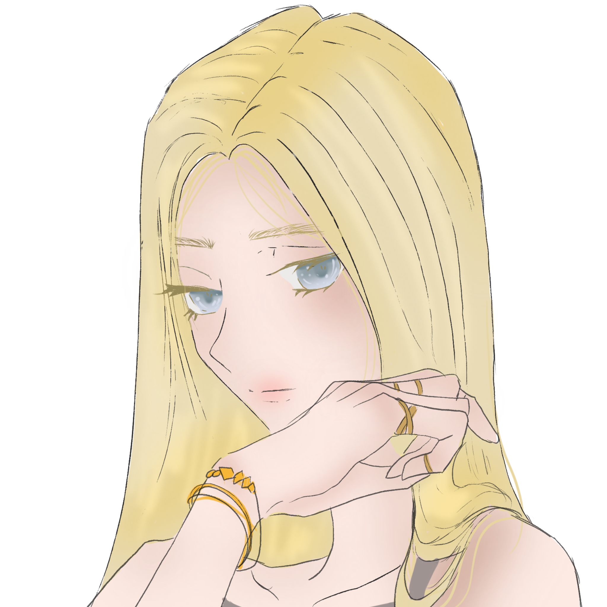

MARIN FINCH

Yaş: 23
Doğum Tarihi: 24.05.1998
Burç: Terazi
MBTI: INFJ
Bölüm: Diyetisyenlik
Sınıf: 3
İlişki Durumu: Var - Jason
Köken: -
Kardeş: -
Saç Rengi: Sarı
Göz Rengi: Açık Mavi
Boy: 1.71
Kilo: 60
Kan Grubu: AB-

- En sevdiği yemek ızgara balıktır.
- En sevdiği hayvan kelebektir.
- En sevdiği şarkı Dangerous Woman - Ariana Grande.
- Favori rengi açık liladır.
- Takı alışveri yapmaya bayılır.
- Mottosu: "Öldürmeyen şey güçlendirir."
- Tavuk kanat yemeyi hiç sevmez.
- Sevdiklerini kaybetmekten çok korkar.
- 2 kedisi var.
- Gece televizyon izlemeyi seviyor.
- Milkshake & patates kızartması karıştırıp yemeyi sever.
- En sevdiği ders biyoloji.
- İnsanların ona gülmesinden endişeleniyor.
- Jason bu kızı hak etmiyor.